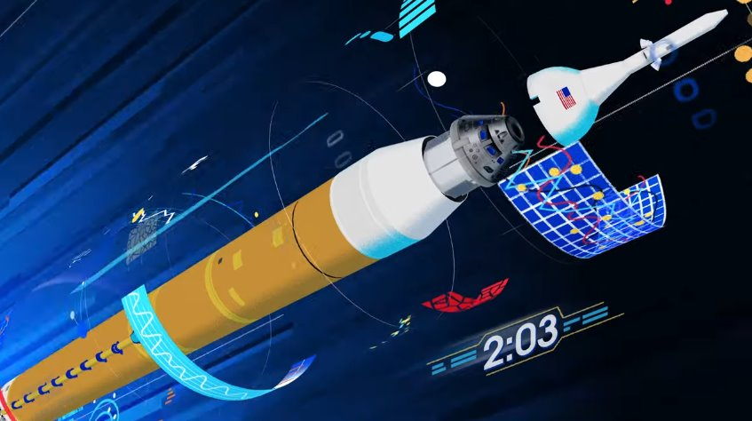
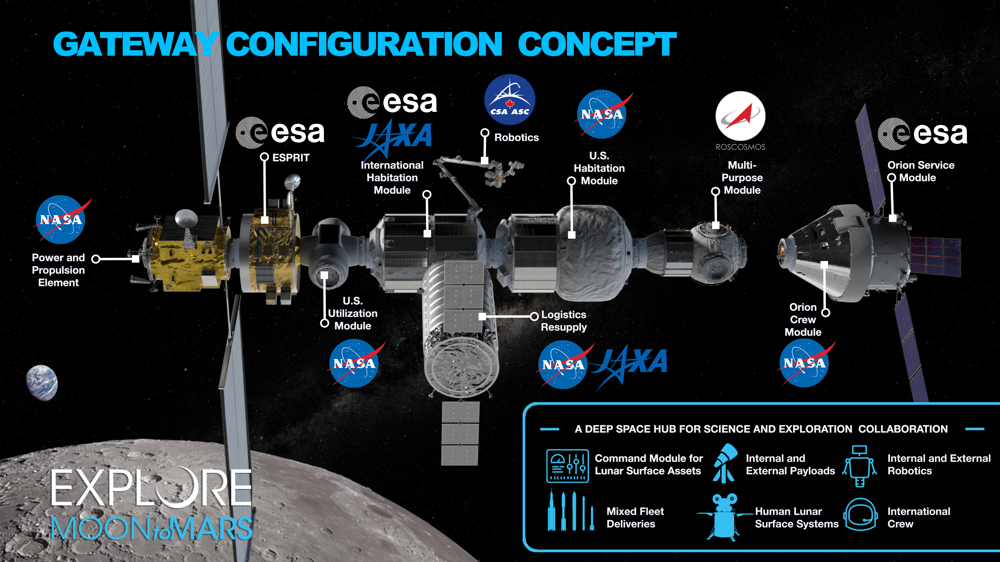

Artemis 1 — первый полёт по программе. Капсула без экипажа проведёт 25 дней на орбите вокруг Луны, удалившись на 60 000 км, и вернется на Землю.
Artemis 2 — первый полёт с экипажем, запланирован на 2022 или 2023 год. Облёт Луны по траектории свободного возврата, экипаж 4 астронавта.
Artemis 3 — полёт с высадкой на Луну. Запланирован на 2024 год. Двое астронавтов останутся на Луне на срок около 1 недели.
Artemis 4 — Artemis 8 запланированы в 2025—2028 годах.
После 2028 года — создание на Луне постоянной базы, рассчитанной на 15 лет эксплуатации

Лунная орбитальная станция

В проекте примут участие американские частные компании, Европейское космическое агентство (ESA), Япония. Одной из целей программы является отправка на Луну «первой женщины и следующего мужчины» («the first woman and the next man»; отсылка к тому факту, что мужчины на Луне в рамках программы Аполлон уже были). Программа Артемида станет ступенью к созданию постоянно обитаемого поселения на Луне, и создаст фундамент для освоения Марса.